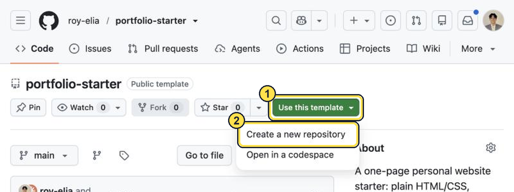
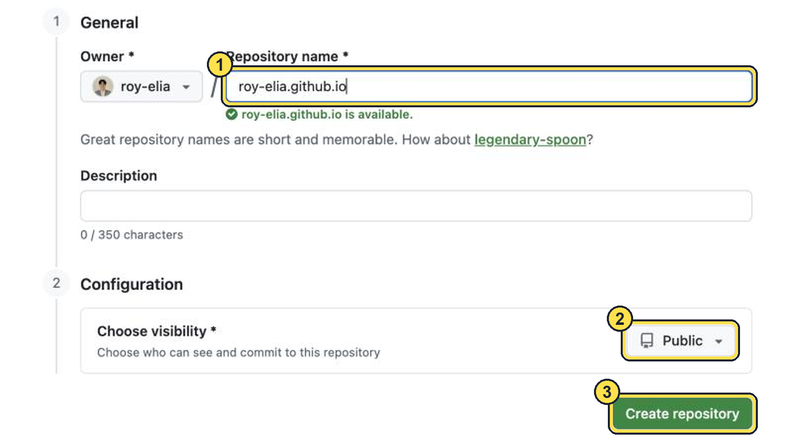
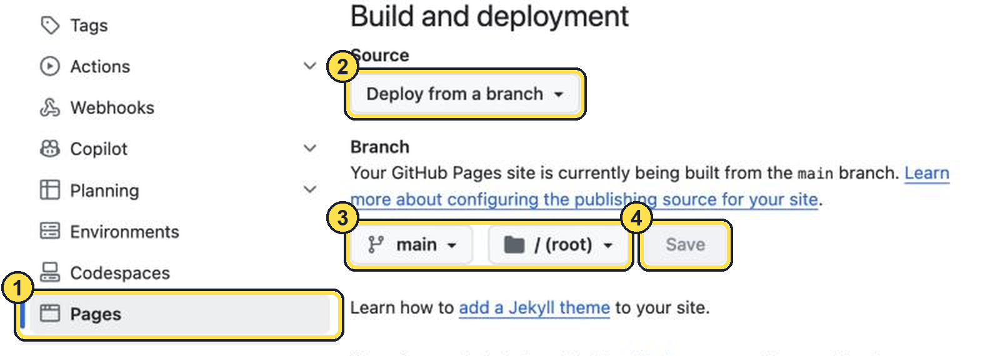
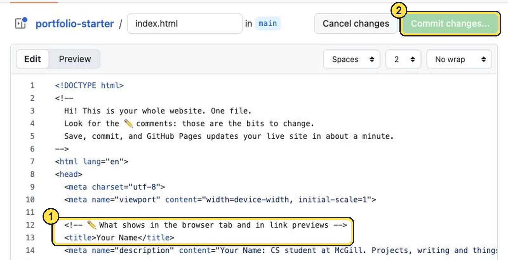

Before you start
- A GitHub account. Sign up at github.com/signup. Your username becomes your web address (
username.github.io), so pick one you'd put on a résumé. - Apply for the GitHub Student Developer Pack now. It includes a domain that's free for one year and GitHub Pro, but approval can take a few days. Go to education.github.com/pack, add your
@mail.mcgill.caaddress, and upload proof of enrolment (a student ID or a Minerva schedule screenshot). - A laptop. A phone works for reading this page, but editing is much easier on a laptop.
Get inspired
The four sites from the slides. Open them and note what you like: the layout, the tone, the small details. Then build your own version of it, not a copy.
- Brittany Chiang Next.js one-page portfolio with a sticky sidebar
- Rauno Freiberg Next.js bold type and small interactive details
- Julia Evans Hugo a blog that's all writing
- Cassidy Williams Astro personality, posts and a newsletter
1. Choose a stack
Your stack is the set of tools that turns your files into a website. If this is your first site, use plain HTML and CSS: the rest of this guide does. Come back to this table when you want more.
- Plain HTML/CSS
- For a first site or a single page. Nothing to install, and you can read every line. Start: copy the starter in step 2.
- Astro
- For a portfolio or blog with several pages. You write pages in Markdown and the site stays fast. Start:
npm create astro@latest - Next.js
- When you need logins, forms or a database. React plus a server in one project. More than a portfolio needs. Start:
npx create-next-app@latest - React + Vite
- For an interactive site when you already know React. Start:
npm create vite@latest
The Astro, Next.js and Vite commands need Node.js installed on your laptop. Plain HTML doesn't need anything.
2. Start from a template
A template is a finished site that you copy and fill with your own content. These steps use a plain HTML starter made for this workshop. The same buttons work for every template listed at the end of this section. On a phone, tap any screenshot to see it full size.
-
Copy the starter site
Open github.com/roy-elia/portfolio-starter and click the green Use this template button, then Create a new repository.

1: Use this template. 2: Create a new repository. -
Name it after yourself
For Repository name, type
your-username.github.iousing your exact GitHub username. That gives you the short addresshttps://your-username.github.io. Keep it Public (free accounts can only publish public repos), then click Create repository.
1: the name, with your own username. 2: Public. 3: Create repository. Any other name works too; your site will just live at username.github.io/that-name/.


Other templates
Open one, then click Use this template (or Fork if there's no template button). Each README explains how to set it up.
- portfolio-starter Plain HTML one page, the starter above
- devportfolio Astro one-page developer CV
- AstroPaper Astro minimal blog
- Academic Pages Jekyll research site, runs on GitHub Pages as is
- al-folio Jekyll research site with a publications list
- PaperMod Hugo fast blog theme
All of these are MIT licensed: change anything you like, and keep the LICENSE file.
3. Deploy it for free
The starter is a static site: a folder of HTML, CSS and image files that the host sends to visitors as they are. There's no server for you to run, which is why hosting it costs nothing.
-
Turn on GitHub Pages
In your new repo, open Settings, then Pages in the left sidebar. Under Build and deployment, set Source to Deploy from a branch, choose
mainand/ (root), and click Save.
1: Pages in the sidebar. 2: Deploy from a branch. 3: mainand/ (root). 4: Save. If you named the repousername.github.io, this may already be on; check anyway. -
Open your live site
Wait about a minute, then refresh the Pages settings. When it says Your site is live at…, click Visit site. That link works for anyone, anywhere. Send it to someone.

1: your address. 2: Visit site. Still a 404? Give it another minute; the first deploy is the slowest. -
Make it yours
In your repo, click
index.html, then the pencil icon (Edit this file) at the top right of the file. Change everything next to a ✏️ comment: your name, intro, links, projects and the Right now list. Colours live at the top ofstyle.css.To save: click Commit changes…, write a short message like add my projects, and confirm. Your live site updates about a minute later. Every commit redeploys the site.

1: a ✏️ comment and the line it points to. 2: Commit changes…. Want a full editor? Press . on your repo for github.dev, or clone it and use VS Code with git add,git commit,git push. -
Add your photo
Open the
assetsfolder in your repo and use Add file → Upload files. Name itme.jpg, then inindex.htmlchangeassets/me.svgtoassets/me.jpg. Commit.


That's it: you have a real website. Raise your hand if anything got stuck, and sign up for the demo showcase at 8:30 if you want to show it off.
Prefer Vercel or Netlify?
Both are free for personal sites and deploy straight from your GitHub repo. Every push to main updates the site.
- Vercel
- Sign up with GitHub, click Add New → Project, import your repo, and click Deploy. Your site lives at
project-name.vercel.app. The best fit for Next.js, and each branch gets its own preview link. Personal, non-commercial use only on the free plan. - Netlify
- Sign up with GitHub, choose Add new project → Import an existing project, pick your repo, and deploy. Your site lives at
name.netlify.app. No repo? Drag a folder onto app.netlify.com/drop. The free plan's monthly credits cover roughly 20 deploys.
4. Add a custom domain
A domain is the address people type, like yourname.me. Without one, your site lives at username.github.io. With the Student Developer Pack you can claim one free for your first year. Current offers on the pack page:
- Namecheap: a free
.medomain for one year. - .TECH: one
.techdomain free for one year. - Name.com: a free domain from 25+ endings like
.liveand.studio, for one year.
Free for the first year only. After a year you pay the registrar to renew it, and renewal prices differ a lot between endings, so check the renewal price before you pick one. If you don't renew, the domain expires and your site goes back to username.github.io.
Once your pack is approved, open the offer on the pack page and claim your domain on the partner's site. Then point it at your site:
- In your repo: Settings → Pages → Custom domain, type your domain, and click Save. Do this before touching DNS.
- At your registrar, add four A records for the bare domain:
185.199.108.153 185.199.109.153 185.199.110.153 185.199.111.153 - Add a CNAME record for
wwwpointing toyour-username.github.io. - Back in Pages settings, tick Enforce HTTPS once it's available. DNS changes can take up to 24 hours.
Full details: GitHub's custom domain docs.
5. Level up your website
Optional ideas for later, once your site is live. Each one links to the docs you'll need.
Add a blog
A blog gives people a reason to come back and shows how you think about your work. The easiest route is Astro's blog template: run npm create astro@latest -- --template blog, then write each post as a Markdown file in src/content/blog/. Astro turns every file into a page. To publish it on GitHub Pages, follow Astro's GitHub Pages guide.
Dark mode
Your site switches to dark colours when the visitor's phone or laptop is set to dark mode. The starter already does this: look for @media (prefers-color-scheme: dark) in style.css and change the colours inside it.
Visitor counts
Find out how many people visit and where they came from, for example after you put your link on your résumé. GoatCounter is free for personal sites and uses no cookies, so you don't need a cookie banner. Sign up, pick a code, and paste this line just before </body> in index.html, with your code in place of YOURCODE:
<script data-goatcounter="https://YOURCODE.goatcounter.com/count"
async src="//gc.zgo.at/count.js"></script>
Notion as your CMS
A CMS (content management system) is the place where you write and edit your site's content. With Notion as your CMS, you write posts in a Notion database and a script copies them onto your site, so you can update the site without touching code. This one needs some coding to set up:
- Make a Notion database for your posts, with columns like title, date and published.
- Create an internal integration at notion.so/profile/integrations and copy its secret. Keep the secret out of your repo.
- Open the database in Notion and add the integration under Connections, so it can read the pages.
- In an Astro or Next.js site, use the Notion API to fetch the posts and notion-to-md to turn each one into Markdown when the site builds.
- Rebuild the site whenever you publish a post. A scheduled GitHub Action can do it for you, with the secret saved under Settings → Secrets and variables → Actions.
Need help or stuck?
Tonight: raise your hand and a mentor will come over.
After tonight: join the CSUS Discord and ask your question there. You can also drop by the CSUS Helpdesk in Trottier 3090 (weekdays 11–5 during term).